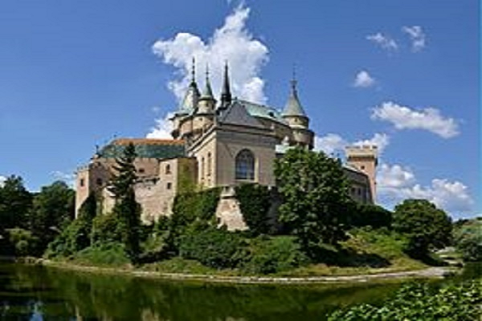
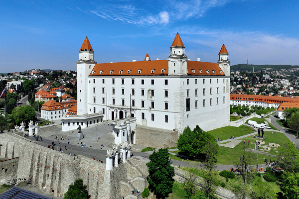
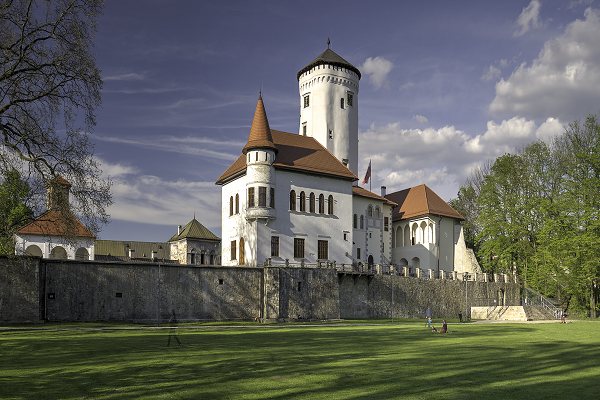
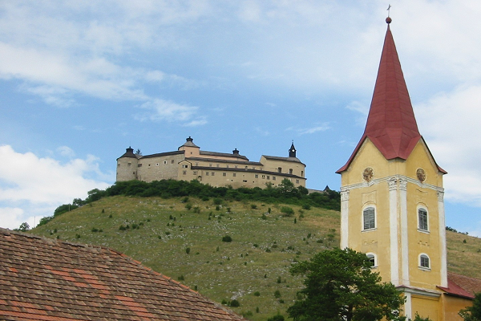

Bojnice Castle (Slovak: Bojnický zámok, Hungarian: Bajmóci vár) is a medieval castle in Bojnice, Slovakia. It is a Romanesque castle with some original Gothic and Renaissance elements built in the 12th century. Bojnice Castle is one of the most visited castles in Slovakia, receiving hundreds of thousands of visitors every year and also being a popular filming stage for fantasy and fairy-tale movies. It was owned by Hungarian kings and nobleman from the 12th century until the territory became part of Czechoslovakia after the Treaty of Trianon in 1920.

Bratislava Castle (Slovak: Bratislavský hrad, IPA:
[ˈbracislawskiː ˈɦrat] ⓘ; German: Pressburger Burg; Hungarian:
Pozsonyi vár) is the main castle of Bratislava, the capital of
Slovakia. The massive rectangular building with four corner
towers stands on an isolated rocky hill of the Little
Carpathians, directly above the Danube river, in the middle of
Bratislava. Because of its size and location, it has been a
dominant feature of the city for centuries.
The location provides excellent views of Bratislava, Austria
and, in clear weather, parts of Hungary. Many legends are
connected with the history of the castle.

The Budatín Castle (Slovak: Budatínsky zámok) is a castle in north-western Slovakia, near the city of Žilina, where the Kysuca river flows into the Váh river.
It was built as a guarding castle in the second half of the 13th century near the confluence of the Kysuca and the Váh, where tolls were collected. At the beginning of the 14th century, the originally royal fortress passed into the hands of Matthew III Csák and the castle, especially the towers, were fortified, and inside the fortress a new palace was built.

The Krásna Hôrka Castle (Slovak: Hrad Krásna Hôrka, Hungarian: Krasznahorka vára) is a castle in Slovakia, built on a hilltop overlooking the village of Krásnohorské Podhradie near Rožňava, in Košice Region. The first recorded mention of the castle was in 1333. In 1961 Krásna Hôrka was designated a National Cultural Monument of the Slovak Republic. It was said to be one of the country's best-preserved castles. On 10 March 2012 the castle was extensively damaged by fire, due to some teens carelessly discarding a cigarette which set the grass on fire.